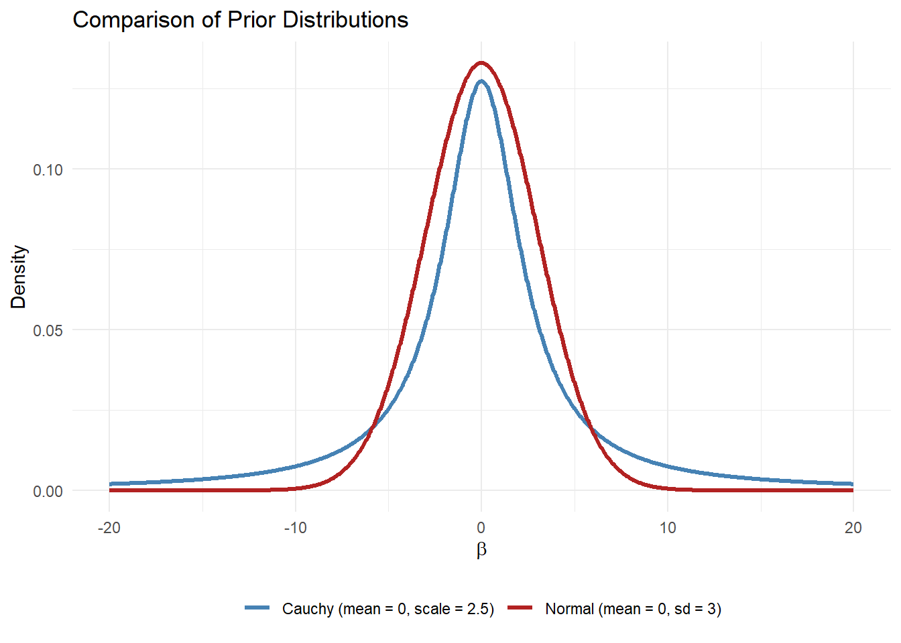
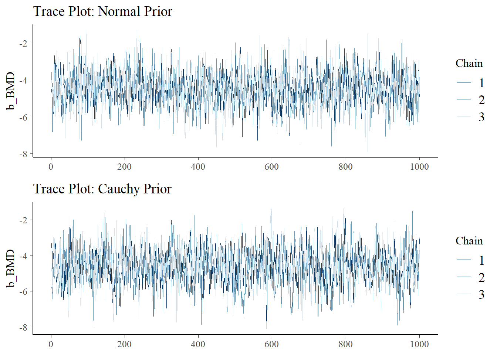
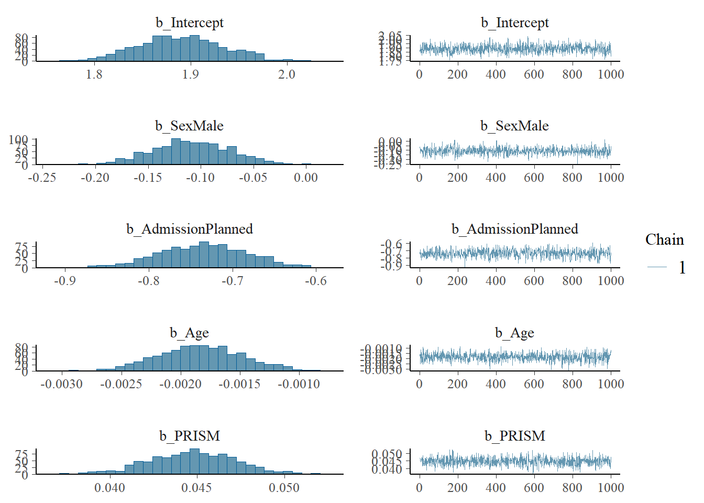
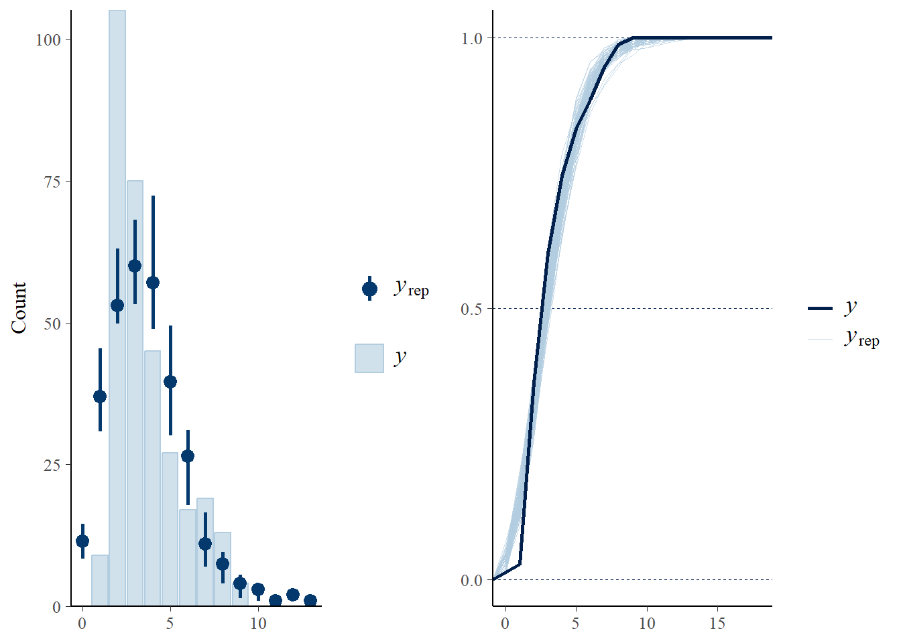

8 More on Non-Gaussian
NOT READY YET
8.1 Learnings
- Outcomes
– LO1: Explain the difference between Bayesian and frequentist concepts of statistical inference.
– LO5: Engage in specifying, checking and interpreting Bayesian statistical analyses in practical problems using effective communication with health and medical investigators.
- Objectives
By the end of this week you should be able to:
– Conduct a sensitivity analysis for a non-Gaussian Bayesian model with varying prior distributions.
– Understand non-Gaussian Bayesian model with count outcome
– Understand the difference between Bayesian and classical models.
– Formulate problems and solutions.
8.2 Sensitivity Analysis
Recall, in our last lecture we demonstrated how to use Bayesian approach to model binary outcome variable, i.e., logistic regression. We also explained how we can define weakly informative, informative and non-informative prior distributions for the coefficients of the predictor variables in the model. In particular, we used normal distribution for this context.
Now, in today’s lecture, we will explore couple of more suggestions for the prior distributions focusing on the weakly informative prior, and then we will compare the posterior results. We will also explore how sensitive is the results based on the prior distribution assumptions.
8.2.1 Cauchy Distribution
Another suggestion for the weakly informative prior distribution for \(\beta\) parameters in logistic regression is the Cauchy prior with mean zero and scale 2.5 (Gelman et al. (2008)). The suggestion is to assign the Cauchy prior to each of the coefficients in the logistic regression except the intercept (i.e., \(\beta_0\)) term. Furthermore, it is recommended to standardise continuous predictor variables when using a Cauchy prior—specifically, \(\text{Cauchy}(\mu = 0, \tau = 2.5)\), because this helps ensure that the resulting change in the log-odds (logit scale) remains within a reasonable range, typically less than 5, when the predictor moves from one standard deviation below the mean to one standard deviation above.
We can draw DAG based on the Cauchy prior for only one predictor variable BMD as follows. Similarly, we can see that for the intercept \(\beta_0\) we consider a normal prior distribution with a relatively wider variance.
8.2.2 Prior Density Plots
Below, we draw two weakly informative prior density plots based on the \(\text{Cauchy}(0, 2.5)\) and \(N(0, 3^2)\) distributions. The Cauchy distribution is represented by the blue curve. We can see, as discussed, one of the key features of the Cauchy distribution is its heavy tails. This means that it allows for more extreme values compared to other distributions like the Normal distribution. In practical terms, this implies that the Cauchy distribution is more flexible and can accommodate larger deviations from the mean. The normal distribution, showed by the red curve, has a mean of 0 and a standard deviation of 3. Unlike the Cauchy distribution, the Normal distribution is more concentrated around the mean. This means that it assumes values of \(\beta\) are more likely to be close to the mean, with fewer extreme values. The tails of the Normal distribution are lighter, indicating that it is less likely to produce outliers compared to the Cauchy distribution.
The choice between these two distributions sometimes can significantly impact the results of a Bayesian analysis. The Cauchy distribution, with its heavy tails, is more robust to outliers and can handle more extreme values. This can be advantageous in situations where you expect the parameter \(\beta\) to have a wide range of possible values. Whereas, the normal distribution, with its lighter tails, is more suitable when you have strong prior beliefs that the parameter values will be close to the mean zero.
Code
library(ggplot2)
x <- seq(-20, 20, length.out = 1000)
normal_density <- dnorm(x, mean = 0, sd = 3)
cauchy_density <- dcauchy(x, location = 0, scale = 2.5)
priors_df <- data.frame(
x = rep(x, 2),
density = c(normal_density, cauchy_density),
distribution = factor(rep(c("Normal (mean = 0, sd = 3)", "Cauchy (mean = 0, scale = 2.5)"), each = length(x)))
)
ggplot(priors_df, aes(x = x, y = density, color = distribution)) +
geom_line(size = 1.2) +
labs(title = "Comparison of Prior Distributions",
x = expression(beta),
y = "Density") +
theme_minimal() +
scale_color_manual(values = c("steelblue", "firebrick")) +
theme(
legend.title = element_blank(),
legend.position = "bottom"
)
8.2.3 Posterior Comparison
We obtain posterior distributions of the model parameters based on both prior options, i.e., \(\beta_1\sim N(0, 3^2)\) and \(\beta_1\sim \text{Cauchy}(0, 2.5)\). We run the Bayesian models using following R code:
Code
library(brms)
library(tidyverse)
bmd_data <- read.csv("bmd_drug.csv")
bmd_data$bmi <- bmd_data$weight_kg/(bmd_data$height_cm/100)^2
bmd_data$fracture <- factor(bmd_data$fracture)
bmd_data$fracture <- relevel(bmd_data$fracture, ref = "no fracture")
bmd_data <- tibble(
Status = bmd_data$fracture,
BMD = bmd_data$bmdtot_spine,
)
priors_normal <- c(
prior(normal(0, 3), class = "b", coef = "BMD"), # N(mean, sd)
prior(normal(0, 10), class = "Intercept") # N(mean, sd)
)
fracture_model_normal_prior <- brm(
formula = Status ~ BMD,
data = bmd_data,
family = bernoulli(link = "logit"),
prior = priors_normal,
chains = 3,
iter = 2000,
warmup = 1000,
cores = 3,
seed = 123
)
#summary(fracture_model_normal_prior)
#plot(fracture_model_normal_prior)
print(prior_summary(fracture_model_normal_prior, all = FALSE), show_df = FALSE)b_BMD ~ normal(0, 3)
Intercept ~ normal(0, 10)And for Cauchy prior distribution we get:
Code
library(brms)
library(tidyverse)
bmd_data <- read.csv("bmd_drug.csv")
bmd_data$bmi <- bmd_data$weight_kg/(bmd_data$height_cm/100)^2
bmd_data$fracture <- factor(bmd_data$fracture)
bmd_data$fracture <- relevel(bmd_data$fracture, ref = "no fracture")
bmd_data <- tibble(
Status = bmd_data$fracture,
BMD = bmd_data$bmdtot_spine,
)
priors_cauchy <- c(
prior(cauchy(0, 2.5), class = "b", coef = "BMD"), # N(mean, sd)
prior(normal(0, 10), class = "Intercept") # N(mean, sd)
)
fracture_model_cauchy_prior <- brm(
formula = Status ~ BMD,
data = bmd_data,
family = bernoulli(link = "logit"),
prior = priors_cauchy,
chains = 3,
iter = 2000,
warmup = 1000,
cores = 3,
seed = 123
)
#summary(fracture_model_cauchy_prior)
#plot(fracture_model_cauchy_prior)
print(prior_summary(fracture_model_cauchy_prior, all = FALSE), show_df = FALSE)b_BMD ~ cauchy(0, 2.5)
Intercept ~ normal(0, 10)Now we get the posterior summary statistics and MCMC trace plots as follows:
Code
summary(fracture_model_normal_prior) Family: bernoulli
Links: mu = logit
Formula: Status ~ BMD
Data: bmd_data (Number of observations: 1077)
Draws: 3 chains, each with iter = 2000; warmup = 1000; thin = 1;
total post-warmup draws = 3000
Regression Coefficients:
Estimate Est.Error l-95% CI u-95% CI Rhat Bulk_ESS Tail_ESS
Intercept 0.77 0.79 -0.79 2.33 1.00 1654 1781
BMD -4.48 0.96 -6.43 -2.55 1.00 1353 1656
Draws were sampled using sampling(NUTS). For each parameter, Bulk_ESS
and Tail_ESS are effective sample size measures, and Rhat is the potential
scale reduction factor on split chains (at convergence, Rhat = 1).Code
summary(fracture_model_cauchy_prior) Family: bernoulli
Links: mu = logit
Formula: Status ~ BMD
Data: bmd_data (Number of observations: 1077)
Draws: 3 chains, each with iter = 2000; warmup = 1000; thin = 1;
total post-warmup draws = 3000
Regression Coefficients:
Estimate Est.Error l-95% CI u-95% CI Rhat Bulk_ESS Tail_ESS
Intercept 0.88 0.85 -0.79 2.52 1.00 1286 1398
BMD -4.61 1.03 -6.66 -2.59 1.00 1150 1207
Draws were sampled using sampling(NUTS). For each parameter, Bulk_ESS
and Tail_ESS are effective sample size measures, and Rhat is the potential
scale reduction factor on split chains (at convergence, Rhat = 1).Code
library(bayesplot)
p1 <- mcmc_trace(as_draws_array(fracture_model_normal_prior),
pars = c("b_BMD")) +
ggtitle("Trace Plot: Normal Prior")
p2 <- mcmc_trace(as_draws_array(fracture_model_cauchy_prior),
pars = c("b_BMD")) +
ggtitle("Trace Plot: Cauchy Prior")
library(gridExtra)
grid.arrange(p1,p2)
Code
#library(bayesplot)
#posterior_normal <- as_draws_df(fracture_model_normal_prior)
#posterior_cauchy <- as_draws_df(fracture_model_cauchy_prior)
#mcmc_areas(
# list(Normal = posterior_normal,
# Cauchy = posterior_cauchy),
# pars = c("b_BMI", "b_Age", "b_SexM", "b_BMD"),
# prob = 0.95
#) + ggtitle("Posterior Distributions: Normal vs. Cauchy Priors")
# LOO model comparison
#loo_normal <- loo(fracture_model_normal_prior)
#loo_cauchy <- loo(fracture_model_cauchy_prior)
#loo_compare(loo_normal, loo_cauchy)
library(gtsummary)
fracture_model_normal_prior %>%
tbl_regression(exponentiate = TRUE) %>%
bold_labels() %>%
modify_caption("**Posterior Odds Ratio for Fracture Model (Normal Prior)**")| Characteristic | exp(Beta) | 95% CI |
|---|---|---|
| BMD | 0.01 | 0.00, 0.08 |
| Abbreviation: CI = Credible Interval | ||
Code
library(gtsummary)
fracture_model_cauchy_prior %>%
tbl_regression(exponentiate = TRUE) %>%
bold_labels() %>%
modify_caption("**Posterior Odds Ratio for Fracture Model (Cauchy Prior)**")| Characteristic | exp(Beta) | 95% CI |
|---|---|---|
| BMD | 0.01 | 0.00, 0.07 |
| Abbreviation: CI = Credible Interval | ||
We can see that both normal and Cauchy priors are providing similar posterior estimates, where Cauchy prior provides a narrower band for the 95% credible interval reflecting the narrower prior assuamption for the Cauchy distribution.
8.3 Prior Hierarchy
Another approach that we can take in Bayesian logistic modeling is to incorporate a hierarchy of prior distributions. This hierarchical setup allows for more flexibility and adaptability in capturing the underlying uncertainty and scale of model parameters. One way to implement this is by introducing multiple hierarchical structures based on different types of priors. Specifically, we can explore two distinct hierarchical formulations for the coefficients in a Bayesian logistic regression, that we have already discussed:
using a normal prior with an exponential hyperprior on its scale parameter \(\sigma\), and
using a Cauchy prior with an exponential hyperprior on its scale parameter \(\tau\).
8.3.1 Normal-Exponential Hierarchy
In the first setup, i.e., normal-exponential hierarchy, the regression coefficient (say for the exposure variable BMD) is assumed to follow a normal distribution, such that \(\beta_1 \sim N(0, \sigma^2)\). Instead of fixing \(\sigma\), we place an exponential hyperprior on it: \(\sigma \sim \text{Exp}(\lambda)\), and we consider different values for the hyper-hyper parameter \(\lambda\). For example, considering the hyper-hyper parameter \(\lambda=1\) allows the model to learn an appropriate scale from the data, shrinking coefficients more aggressively when \(\sigma\) is small and allowing more flexibility when \(\sigma\) is large. This structure introduces a level of adaptivity that can help prevent overfitting while still permitting the model to express sufficient complexity when warranted by the data.
Code
library(brms)
stanvars <- stanvar(scode = "real<lower=0> sigma;", block = "parameters") +
stanvar(scode = "sigma ~ exponential(1);", block = "model")
priors <- c(
prior(normal(0, sigma), class = "b"),
prior(normal(0, 10), class = "Intercept")
)
fracture_model_normal_hierarchy <- brm(
formula = Status ~ BMD,
data = bmd_data,
family = bernoulli(link = "logit"),
prior = priors,
stanvars = stanvars,
chains = 3,
iter = 2000,
warmup = 1000,
cores = 3,
seed = 123
)
print(prior_summary(fracture_model_normal_hierarchy, all = FALSE), show_df = FALSE)b ~ normal(0, sigma)
Intercept ~ normal(0, 10)Code
summary(fracture_model_normal_hierarchy) Family: bernoulli
Links: mu = logit
Formula: Status ~ BMD
Data: bmd_data (Number of observations: 1077)
Draws: 3 chains, each with iter = 2000; warmup = 1000; thin = 1;
total post-warmup draws = 3000
Regression Coefficients:
Estimate Est.Error l-95% CI u-95% CI Rhat Bulk_ESS Tail_ESS
Intercept 0.57 0.88 -1.15 2.28 1.00 1595 1820
BMD -4.22 1.07 -6.36 -2.14 1.00 1431 1691
Draws were sampled using sampling(NUTS). For each parameter, Bulk_ESS
and Tail_ESS are effective sample size measures, and Rhat is the potential
scale reduction factor on split chains (at convergence, Rhat = 1).Code
library(gtsummary)
fracture_model_normal_hierarchy %>%
tbl_regression(exponentiate = TRUE) %>%
bold_labels() %>%
modify_caption("**Posterior Odds Ratio (Normal-Exponential Hierarchy)**")| Characteristic | exp(Beta) | 95% CI |
|---|---|---|
| BMD | 0.01 | 0.00, 0.12 |
| Abbreviation: CI = Credible Interval | ||
From the posterior summary we can see that the use of normal-exponential hierarchy adds a wider credible interval, i.e., OR=(0.0,0.12) for the model parameter.
Note that, by default we can’t recall the prior distribution hierarchy from the ‘brms’ output. For interested students, I would suggest to explore the stan code behined this model, which is:
Code
library(brms)
stancode(fracture_model_normal_hierarchy)// generated with brms 2.22.0
functions {
}
data {
int<lower=1> N; // total number of observations
array[N] int Y; // response variable
int<lower=1> K; // number of population-level effects
matrix[N, K] X; // population-level design matrix
int<lower=1> Kc; // number of population-level effects after centering
int prior_only; // should the likelihood be ignored?
}
transformed data {
matrix[N, Kc] Xc; // centered version of X without an intercept
vector[Kc] means_X; // column means of X before centering
for (i in 2:K) {
means_X[i - 1] = mean(X[, i]);
Xc[, i - 1] = X[, i] - means_X[i - 1];
}
}
parameters {
vector[Kc] b; // regression coefficients
real Intercept; // temporary intercept for centered predictors
real<lower=0> sigma;
}
transformed parameters {
real lprior = 0; // prior contributions to the log posterior
lprior += normal_lpdf(b | 0, sigma);
lprior += normal_lpdf(Intercept | 0, 10);
}
model {
sigma ~ exponential(1);
// likelihood including constants
if (!prior_only) {
target += bernoulli_logit_glm_lpmf(Y | Xc, Intercept, b);
}
// priors including constants
target += lprior;
}
generated quantities {
// actual population-level intercept
real b_Intercept = Intercept - dot_product(means_X, b);
}8.3.2 Cauchy-Exponential Hierarchy
In the second hierarchical approach, i.e., Cauchy-exponential hierarchy, we adopt a heavy-tailed Cauchy prior for each coefficient: \(\beta \sim \text{Cauchy}(0, \tau)\). An then to regulate the scale \(\tau\), we again place an exponential hyperprior: \(\tau \sim \text{Exp}(\lambda)\). This configuration allows the model to dynamically adapt the amount of shrinkage, with the heavy tails of the Cauchy helping to preserve large coefficients when needed, while the exponential hyperprior controls global shrinkage.
Code
library(brms)
stanvars <- stanvar(scode = "real<lower=0> tau;", block = "parameters") +
stanvar(scode = "tau ~ exponential(1);", block = "model")
priors <- c(
prior(cauchy(0, tau), class = "b"),
prior(normal(0, 10), class = "Intercept")
)
fracture_model_cauchy_hierarchy <- brm(
formula = Status ~ BMD,
data = bmd_data,
family = bernoulli(link = "logit"),
prior = priors,
stanvars = stanvars,
chains = 3,
iter = 2000,
warmup = 1000,
cores = 3,
seed = 123
)
print(prior_summary(fracture_model_cauchy_hierarchy, all = FALSE), show_df = FALSE)b ~ cauchy(0, tau)
Intercept ~ normal(0, 10)Code
summary(fracture_model_cauchy_hierarchy) Family: bernoulli
Links: mu = logit
Formula: Status ~ BMD
Data: bmd_data (Number of observations: 1077)
Draws: 3 chains, each with iter = 2000; warmup = 1000; thin = 1;
total post-warmup draws = 3000
Regression Coefficients:
Estimate Est.Error l-95% CI u-95% CI Rhat Bulk_ESS Tail_ESS
Intercept 0.82 0.84 -0.85 2.43 1.00 1799 2110
BMD -4.54 1.02 -6.50 -2.51 1.00 1653 1941
Draws were sampled using sampling(NUTS). For each parameter, Bulk_ESS
and Tail_ESS are effective sample size measures, and Rhat is the potential
scale reduction factor on split chains (at convergence, Rhat = 1).Code
library(gtsummary)
fracture_model_cauchy_hierarchy %>%
tbl_regression(exponentiate = TRUE) %>%
bold_labels() %>%
modify_caption("**Posterior Odds Ratio (Cauchy-Exponential Hierarchy)**")| Characteristic | exp(Beta) | 95% CI |
|---|---|---|
| BMD | 0.01 | 0.00, 0.08 |
| Abbreviation: CI = Credible Interval | ||
As expected, we can see for the Cauchy-exponential hierarchy the 95% credible interval for the OR is estimates as OR=(0.0,0.08). Similarly, to check the stan code behined this we write:
Code
library(brms)
stancode(fracture_model_cauchy_hierarchy)// generated with brms 2.22.0
functions {
}
data {
int<lower=1> N; // total number of observations
array[N] int Y; // response variable
int<lower=1> K; // number of population-level effects
matrix[N, K] X; // population-level design matrix
int<lower=1> Kc; // number of population-level effects after centering
int prior_only; // should the likelihood be ignored?
}
transformed data {
matrix[N, Kc] Xc; // centered version of X without an intercept
vector[Kc] means_X; // column means of X before centering
for (i in 2:K) {
means_X[i - 1] = mean(X[, i]);
Xc[, i - 1] = X[, i] - means_X[i - 1];
}
}
parameters {
vector[Kc] b; // regression coefficients
real Intercept; // temporary intercept for centered predictors
real<lower=0> tau;
}
transformed parameters {
real lprior = 0; // prior contributions to the log posterior
lprior += cauchy_lpdf(b | 0, tau);
lprior += normal_lpdf(Intercept | 0, 10);
}
model {
tau ~ exponential(1);
// likelihood including constants
if (!prior_only) {
target += bernoulli_logit_glm_lpmf(Y | Xc, Intercept, b);
}
// priors including constants
target += lprior;
}
generated quantities {
// actual population-level intercept
real b_Intercept = Intercept - dot_product(means_X, b);
}These two hierarchical strategies offer different trade-offs in terms of regularisation and flexibility. The normal-exponential hierarchy is more traditional and is often preferred for more stable, well-behaved datasets, while the Cauchy-exponential hierarchy provides robustness and flexibility in the presence of outliers or sparse, large signals. Comparing these hierarchical approaches in practice can reveal which formulation better suits a given problem, depending on the structure and noisiness of the data.
8.4 Bayesian Model for Count Data
8.4.1 ICU Data
In this analysis, we aim to model Ndays, which represents the number of days a child under five years old has been admitted to the Intensive Care Unit (ICU). This variable is continuous and reflects both the clinical severity of the patient’s condition and potentially other factors influencing the duration of care. Understanding what contributes to longer or shorter ICU stays can provide insights into patient outcomes and inform clinical decision-making.
Several key variables can be included as potential predictors in the model. Sex is a categorical variable with two levels: Male and Female. Admission type is another categorical variable, distinguishing between Planned and Not planned (i.e., emergency or unplanned) ICU admissions. Planned admissions typically occur in a controlled setting (such as postoperative care), whereas unplanned admissions may result from sudden health deterioration, potentially indicating more severe conditions. Age is a continuous variable measured in weeks, appropriate for the pediatric population under study (children under 5 years of age). Younger children may have different recovery trajectories and risks compared to older ones within this age bracket, making age an important control variable in the analysis. Finally, PRISM refers to the Pediatric Risk of Mortality score, a widely used clinical measure of illness severity in pediatric ICU patients. The PRISM III score is continuous and has been shown to correlate strongly with mortality risk. Lower scores (0–10) are typically associated with lower mortality rates (e.g., around 10.2%), while higher scores (21–30) correspond to significantly increased mortality risk (e.g., approximately 73.8%), with scores above 30 linked to even greater risk. As such, the PRISM score is expected to be a strong predictor of ICU length of stay, with higher scores likely corresponding to longer and more resource-intensive admissions.
Code
library(brms)
library(tidyverse)
icu_data <- read.csv("icu_days_restricted.csv")
icu_data <- tibble(
Ndays = icu_data$ndays,
Sex = factor(icu_data$sex),
Admission = factor(icu_data$admtype),
Age = icu_data$Age,
PRISM = icu_data$PRISM
)
library(dplyr)
summary_by_sex <- icu_data %>%
group_by(Sex) %>%
summarise(
Mean = mean(Ndays),
Variance = var(Ndays),
Count = n()
)
summary_by_admission <- icu_data %>%
group_by(Admission) %>%
summarise(
Mean = mean(Ndays),
Variance = var(Ndays),
Count = n()
)
#knitr::kable(summary_by_sex)
#knitr::kable(summary_by_admission)
library(kableExtra)
summary_by_sex %>%
kable("html", caption = "ICU Days by Sex") %>%
kable_styling(bootstrap_options = c("striped", "hover", "condensed", "responsive"))| Sex | Mean | Variance | Count |
|---|---|---|---|
| Female | 3.628571 | 4.004933 | 140 |
| Male | 3.597701 | 3.155139 | 174 |
Code
summary_by_admission %>%
kable("html", caption = "ICU Days by Admission Type") %>%
kable_styling(bootstrap_options = c("striped", "hover", "condensed", "responsive"))| Admission | Mean | Variance | Count |
|---|---|---|---|
| Not planned | 4.094972 | 3.726885 | 179 |
| Planned | 2.970370 | 2.551354 | 135 |
8.4.2 Model Development
The primary goal of this modelling exercise is to examine how these demographic and clinical factors are associated with ICU stay duration. Given the nature of the count outcome variable (Ndays), statistical models such as Bayesian Poisson regression may be appropriate.
We write the directed acyclic graph (DAG) as follows, where we use a similar type of weakly informative prior distribution for the model parameters.
Now we write the Bayesian model using mathematical notations. Suppose, \(\text{Ndays}_i\) be the ICU stay duration for patient \(i\), and \(\lambda_i\) be the expected number of days in the ICU for patient \(i\). The predictor variables in the model are PRISM score, which is the exposure variable for our model. Other predictor variables are, age (in weeks), sex (coded as binary: e.g., 0 = Female, 1 = Male) and admission type (coded as binary: 0 = Planned, 1 = Not Planned)
Hence, we write:
\[ \text{Ndays}_i \sim \text{Poisson}(\lambda_i) \]
\[ \log(\lambda_i) = \beta_0 + \beta_1 \cdot \text{PRISM}_i + \beta_2 \cdot \text{Age}_i + \beta_3 \cdot \text{Sex}_i + \beta_4 \cdot \text{Admission}_i \]
Each regression coefficient has a prior distribution, typically Gaussian:
\[ \beta_j \sim N(\mu_j, \sigma_j^2) \quad \text{for } j = 0, 1, 2, 3, 4 \]
Where:
- \(\mu_j\) is the prior mean for coefficient \(\beta_j\)
- \(\sigma_j^2\) is the prior variance (reflecting uncertainty)
This formulation assumes log-link, standard for Poisson regression, and independent Gaussian priors for the coefficients.
Suppose, \(Y_i = \text{Ndays}_i\) and using vector and matrix notation,
\[ \log(\lambda_i) = \mathbf{x}_i \boldsymbol{\beta} \quad \text{where } \mathbf{x}_i = (1, \text{PRISM}_i, \text{Age}_i, \text{Sex}_i, \text{Admission}_i)' \]
The likelihood for the data is:
\[ p(\mathbf{y} \mid \mathbf{x}, \boldsymbol{\beta}) = \prod_{i=1}^{n} \frac{e^{-\lambda_i} \lambda_i^{y_i}}{y_i!} = \prod_{i=1}^{n} \frac{e^{-\exp(\mathbf{x}_i \boldsymbol{\beta})} \left[e^{(\mathbf{x}_i \boldsymbol{\beta})}\right]^{y_i}}{y_i!} \]
Assume independent Gaussian priors for each coefficient, then the joint posterior is:
\[ p(\boldsymbol{\beta} \mid \mathbf{y},\mathbf{x}) \propto \prod_{i=1}^{n} \frac{e^{-\exp(\mathbf{x}_i \boldsymbol{\beta})} \left[e^{(\boldsymbol{x}_i \boldsymbol{\beta})}\right]^{y_i}}{y_i!} \cdot \prod_{j=0}^{q} \frac{1}{\sqrt{2\pi \sigma_j^2}} e^{\left( -\frac{(\beta_j - \mu_j)^2}{2\sigma_j^2} \right)} \]
This posterior distribution does not have a closed-form, so we will use Markov Chain Monte Carlo (MCMC) methods to get the inference.
Using following R code we can get the posterior results:
Code
library(brms)
library(tidyverse)
icu_data <- read.csv("icu_days_restricted.csv")
icu_data <- tibble(
Ndays = icu_data$ndays,
Sex = factor(icu_data$sex),
Admission = factor(icu_data$admtype),
Age = icu_data$Age,
PRISM = icu_data$PRISM
)
icu_model <- brm(
formula = Ndays ~ PRISM + Sex + Admission + Age,
data = icu_data,
family = poisson(link = "log"),
prior = c(
prior(normal(0, 3), class = "b"),
prior(normal(0, 10), class = "Intercept")
),
iter = 2000,
chains = 3,
cores = 3,
seed = 123
)
summary(icu_model) Family: poisson
Links: mu = log
Formula: Ndays ~ PRISM + Sex + Admission + Age
Data: icu_data (Number of observations: 314)
Draws: 3 chains, each with iter = 2000; warmup = 1000; thin = 1;
total post-warmup draws = 3000
Regression Coefficients:
Estimate Est.Error l-95% CI u-95% CI Rhat Bulk_ESS Tail_ESS
Intercept 1.31 0.07 1.17 1.46 1.00 1614 1890
PRISM 0.02 0.00 0.01 0.03 1.00 2829 2081
SexMale -0.04 0.06 -0.16 0.08 1.00 1768 1814
AdmissionPlanned -0.25 0.07 -0.38 -0.12 1.00 884 487
Age -0.00 0.00 -0.00 -0.00 1.00 2885 2056
Draws were sampled using sampling(NUTS). For each parameter, Bulk_ESS
and Tail_ESS are effective sample size measures, and Rhat is the potential
scale reduction factor on split chains (at convergence, Rhat = 1).Code
plot(icu_model)
Code
library(bayesplot)
p1 <- pp_check(icu_model, type="bars")
p2 <- pp_check(icu_model, ndraws=100, type = "ecdf_overlay")
library(gridExtra)
grid.arrange(p1, p2, ncol = 2)
Now for obtaining the risk ratio (or rate ratio), which is \(\exp(\beta)\), we get the posterior summary:
Code
#library(bayesplot)
#posterior <- as_draws_df(icu_model)
#posterior_rr <- posterior %>%
# dplyr::select(starts_with("b_")) %>%
# dplyr::mutate(across(everything(), exp))
#mcmc_trace(
# posterior_rr,
# pars = c("b_SexMale","b_AdmissionPlanned", "b_Age", "b_PRISM")
#) +
# ggplot2::labs(title = "Posterior Trace Plots of Risk Ratios")
library(gtsummary)
icu_model %>%
tbl_regression(exponentiate = TRUE) %>%
bold_labels() %>%
modify_caption("**Posterior Risk Ratio (RR) - Poisson Model**")| Characteristic | exp(Beta) | 95% CI |
|---|---|---|
| PRISM | 1.02 | 1.01, 1.03 |
| Sex | ||
| Female | — | — |
| Male | 0.96 | 0.85, 1.08 |
| Admission | ||
| Not planned | — | — |
| Planned | 0.78 | 0.68, 0.89 |
| Age | 1.00 | 1.00, 1.00 |
| Abbreviation: CI = Credible Interval | ||
The model estimates how different patient characteristics influence the expected number of days spent in the ICU. Since it’s a Bayesian Poisson regression, the coefficients are exponentiated to yield risk ratios (RRs), which indicate the multiplicative change in ICU stay duration associated with each predictor. A risk ratio greater than 1 suggests a longer ICU stay, while a value less than 1 indicates a shorter stay.
The PRISM score, which measures the severity of illness, has a risk ratio of 1.02 with a 95% credible interval of (1.01, 1.03). This means that for each one-point increase in PRISM, the expected ICU stay increases by about 2%, and this effect is statistically credible since the interval does not include 1. Regarding sex, males have a risk ratio of 0.96 compared to females, suggesting a slightly shorter ICU stay, but the credible interval (0.85, 1.08) includes 1, indicating that this difference is not statistically meaningful.
For admission type, patients with planned admissions have a risk ratio of 0.78 compared to those with unplanned admissions. This implies that planned admissions are associated with a 22% shorter ICU stay, and the credible interval (0.68, 0.89) supports this as a credible finding. Lastly, age has a risk ratio of 1.00 with a very narrow credible interval, suggesting that age has no meaningful effect on ICU stay duration in this model.
8.4.3 More on Count Data
In this unit, we will explain some situations that may occur when modelling count data, such as overdispersion and zero inflation. However, we will not go into detail on modeling overdispersed or underdispersed data, zero-inflated situations, or models with offsets. Instead, we will provide related references for interested readers and students.
Model for over and under dispersion
When we model count data using a Bayesian Poisson model, it is important to examine whether the underlying assumptions of the Poisson distribution hold true for our dataset. One of the key assumptions of the Poisson distribution is that the mean and variance are equal. In other words, the expected value \(\lambda\) of the distribution should be the same as its variance. This property simplifies modelling and interpretation but may not always reflect the characteristics of real-world count data.
Before proceeding with model interpretation or inference, we should check whether this assumption is met. If the variance substantially exceeds the mean, we are likely dealing with overdispersion. This situation can arise due to various factors such as unobserved heterogeneity or clustering in the data, etc. On the other hand, underdispersion occurs, where the variance is smaller than the mean, which is less common but can also signal model misspecification or constraints in the data-generating process.
In a Bayesian framework, we can use techniques like posterior predictive checks to assess whether the Poisson model adequately captures the variability in the data. If we detect signs of overdispersion or underdispersion, it may be necessary to consider alternative models that offer more flexibility. For example, the Negative Binomial model introduces an additional dispersion parameter that allows the variance to exceed the mean, making it a suitable alternative in the presence of overdispersion (McElreath (2020)). In brm package, we use a negetive-binomial family, i.e., negbinomial(link = 'log') by replacing the poisson.
Model with Infleated Zeros
When our count data exhibit more zeros than a standard Poisson or Negative Binomial model would predict, we are facing zero inflation.
To address this, we can employ zero-inflated models, such as the Zero-Inflated Poisson (ZIP) or Zero-Inflated Negative Binomial (ZINB). In these frameworks, we explicitly model two stages. First, a binary process determines whether an observation is a structural zero. Second, for cases not deemed structural zeros, we model counts, allowing for additional zeros, using a Poisson or Negative Binomial distribution. By separating these processes, we capture both the excess zeros and the underlying count behavior more accurately (McElreath (2020)).
Alternatively, we might choose a hurdle model when we believe that the data-generating mechanism for zeros is fundamentally different from that for positive counts (McElreath (2020)). In a hurdle approach, the first component models the probability of observing zero versus a positive count. Once the hurdle of producing a non-zero value is crossed, a second component models the strictly positive counts using a zero-truncated distribution. This ensures that all zeros arise from the first stage, while the second stage focuses solely on positive outcomes.
Deciding between zero-inflated and hurdle formulations depends on our substantive understanding of the process. If we think some zeros are truly “structural” and would never result in a non-zero count, a zero-inflated model is preferable. If instead we believe that the transition from zero to positive count represents a distinct event, after which counts follow a different regime, a hurdle model may offer more interpretability.
In both strategies, we improve model fit and inference by aligning our statistical assumptions with the realities of our data.
Model with offset
There are also situations when we might prefer to model ratios instead of raw counts. This approach can be particularly useful when we need to adjust for differences in exposure, population size, or observation periods. For example, if we are analysing the number of hospital admissions across different regions, modeling the admission rate per 1,000 people allows us to account for differences in population size. Using raw counts in such cases could be misleading, as a region with a larger population will naturally have more admissions, even if the underlying risk is the same.
Modeling ratios or rates allows us to make fair comparisons across groups and can help control for varying levels of opportunity or risk exposure. In statistical terms, this is often done by including an ‘offset’ in the model. For instance, in a Poisson regression, we can include the log of the exposure variable (e.g., population size or person-time) as an offset term. This allows the model to estimate the rate of events per unit of exposure rather than the absolute number of events.
8.5 Summary
In today’s session, we focused on Bayesian modeling techniques for logistic regression and count data. We began with a sensitivity analysis of prior distributions in logistic regression, comparing the effects of using Cauchy and normal weakly informative priors. This highlighted how prior choice can influence inference, particularly when data are limited or noisy. Next, we examined hierarchical prior structures, exploring normal-exponential and Cauchy-exponential priors, which offer flexible ways to model parameter shrinkage and improve regularisation in complex models. Finally, we introduced Bayesian modelling of count data through Poisson regression, and how these models can be adapted to handle varying data characteristics and how prior specification remains crucial. We have also briefly discussed some count data situations, such as overdispersion, when the Poisson distribution might not be the right approach to model the data
8.6 Live tutorial and discussion
The final learning activity for this week is the live tutorial and discussion. This tutorial is an opportunity for you to to interact with your teachers, ask questions about the course, and learn about biostatistics in practice. You are expected to attend these tutorials when possible for you to do so. For those that cannot attend, the tutorial will be recorded and made available on Canvas. We hope to see you there!
8.7 Tutorial Exercises
Solutions will be provided later after the tutorial.